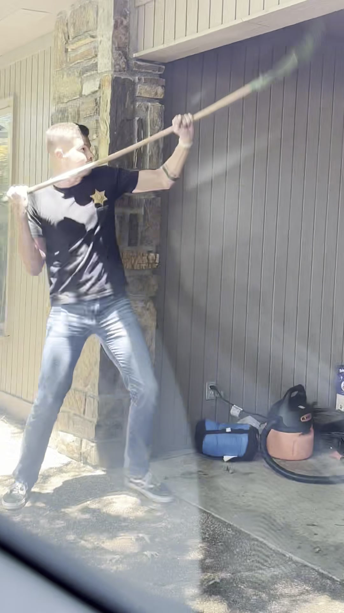

pov:
you hired a father & son crew
dad:
does the actual work
also dad:
ladders are optional
son:
does the work dad points at
both of us:
fight bats. for free.
the new hire:
still in training
(he is 2)
lunch break:
milk chugging contest
the result:
somehow it works
follow the crew